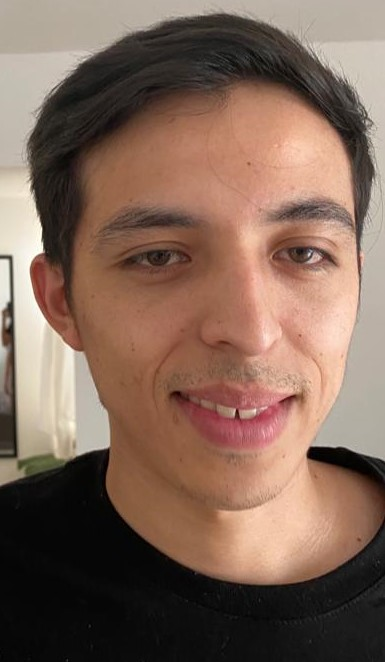

Antonio Rojas Jauregui
Torreon, Coahuila, Mexico
Datos Generales
Email:
jauregui.rojas.antonio@gmail.com
Numero:
(871) 4574258
Github:
ArojasJ
Linkedin:
Antonio Rojas
Descripcion personal
Licenciado en Administracion interesado en adentrarse al mundo del desarrollo de Software, Actualmente en formacion para convertirme en Desarrollador Fullstack.
Formacion Academica
Tecnico Minero de la Universidad Tecnologica de la Laguna Durango
Licenciado en Direccion y Administracion en la Universidad Interamericana para el Desarrollo
Experiencia Laboral
FIFOMI. Agosto 2017 - Enero 2018
Asistente administrativo
Analista de Gastos
Asistente del departamento de capacitacion
Maestro de Ingles Frente a Grupo. Enero 2018 - Enero 2019
Programa nacional de ingles
Banorte Enero 2019 - Abril 2021
Asesor Financiero
Arca Continental. Enero 2019 - Noviembre 2019
Asistente de Nominas
Ferreteria Margarita. Abril 2021 - Actualidad
Negocio propio
¿Porque convertirme en desarrollador de software?
Desde pequeño tuve interes por la tecnologia pero no tuve la oportunidad de estudiar en una escuela que se enfocara en ello, afortunadamente hoy hay muchas mas maneras de seguir aprendiendo y convertirme en un profesional del ambito tecnologico, creo que este campo seguira creciendo y me gustaria formar parte de un proyecto retador en donde pueda aplicar los conocimientos adquiridos como desarrollador de software.